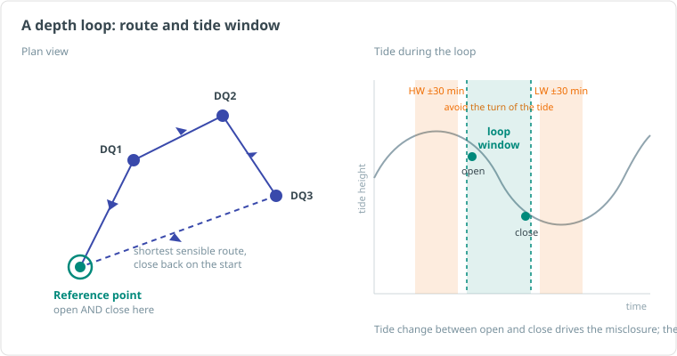

Depth Loop Field Procedure¶
Purpose
How to plan, execute, and QC a pressure-sensor depth loop in the field -- the acquisition side: tide-window planning, station discipline, hold-stability criteria, live QC, and closing the loop with a defensible misclosure. The theory, sensor setup, and pressure-to-depth reduction maths are covered in Depth Measurement Operations; this article is about actually running the loop.
What You Are Trying to Achieve¶
A depth loop is a series of discrete pressure observations at subsea points of interest (spool ends, hub flanges, structure datums) that starts and ends on the same reference point. Because the loop closes on itself, the difference between the opening and closing observation -- the misclosure -- is a direct, self-contained quality figure for the whole loop.
Misclosure is dominated by the tide change between open and close, plus any sensor drift. The reduction distributes it linearly over time (see closed loop reduction). Everything in this procedure exists to keep the misclosure small and its cause explainable.

The one-line version
Warm sensor, fresh CTD, quiet tide window, short loop, still ROV, same point open and close.
Planning¶
Tide window¶
- Pull the predicted tide curve for the loop period before you start. The tide change during the loop goes straight into your misclosure, so plan the loop across the flattest part of the curve you can get.
- Do not observe within ~30 minutes either side of high or low water -- the linear-over-time correction assumes a steady tide rate, and the turn of the tide breaks that assumption.
- Short loops beat long loops. Less elapsed time means less tide change, less drift, and a cleaner linear correction.
Route and stations¶
- Plan the visiting order as the shortest sensible route between points, opening and closing on the same reference point.
- If the loop will run long, plan re-visits to the reference point at intervals (classically every ~30 minutes) or split the work into multiple smaller loops.
- Know each station's expected position and depth before diving. A station list in the survey package (or on paper) prevents "which flange was that" debates in reporting.
Sensor and inputs¶
- Select a sensor whose full-scale rating matches the working depth -- accuracy scales with full scale, so a 4000 m-rated sensor in 500 m of water throws away accuracy for nothing.
- Pressure sensors need time to reach ambient water temperature: allow for warm-up at working depth (suppliers quote up to 2 hours for full stabilisation). Plan other checks -- USBL, INS, video -- during this window rather than waiting idle. A sensor still settling produces a slow drift that is indistinguishable from tide in the loop.
- Take a CTD cast before the loop, ideally to the deepest part of the work area, for the mean water-column density used in the conversion. Compare it against the previous cast.
- Decide the atmospheric pressure handling up front:
- Tare on deck (zero against surface pressure) is fine for short dives -- but any atmospheric change after taring folds silently into your depths.
- A live barometer feed to the survey package is preferred for longer work. Either way, log the barometric value and method.
On-Deck Checks¶
Before the vehicle dives:
- Calibration certificate valid, coefficients entered, and a copy in the project folder
- Output format, units and rate verified (continuous output at ~4 Hz is typical)
- Deck reading sensible: roughly atmospheric (about 13.8--15.2 PSI as pressure, or ~zero as depth if tared). A deck reading off by more than centimetre-level needs explaining before the dive -- wrong coefficients, blocked port, deposits, or a stale tare
- Offsets from the point of measurement to the sensor (brackets, handles) measured and recorded
- Data confirmed logging in the acquisition package, time-synced to the nav clock
At Each Station¶
The observation is only as good as the hold. At each point:
- Settle first. The vehicle stable on or against the point, thrusters as quiet as the pilot can make them, and the pressure port out of thruster wash.
- Log a fixed window -- 30 to 60 seconds at ~4 Hz is the common standard. Longer does not help; a clean 30 s beats a noisy 3 min.
- Watch the spread, not just the mean. During the window, monitor:
- Pressure standard deviation -- a sensor that is not sitting still shows it here first. A typical hold on a stable point gives a pressure SD equivalent to a few centimetres; if it is wandering, stop and re-settle.
- Position spread -- confirms the vehicle actually held one spot rather than averaging a drift.
- Document the point. Time, station ID, and log-file reference in the log; a video still or sketch of the exact point of measurement so the reported depth is unambiguous.
- If a hold has to be accepted outside your stability criteria (weather, time pressure), flag it as such at acquisition time -- do not let it surface as a mystery in processing.
Re-log, don't average away
A bad hold does not improve by logging longer. If the SD is high or the vehicle moved, discard the window, note the reason, re-settle and re-log. Keep the discarded attempt in the record -- discards with reasons are part of an honest dataset.
Loop Discipline¶
- Open and close on the same physical point, same sensor orientation, same offsets. "Near the same point" is not a closure.
- Revisit the reference point at planned intervals on long loops; each revisit gives an intermediate tide/drift check.
- Compute the misclosure immediately at close-out, before the vehicle leaves the site: raw (pressure) and tide-corrected. If it fails the acceptance criterion, the cheapest time to re-run the loop is right now, not after demob.
- For metrology-grade work, run the loop at least twice; repeatability between loops (commonly < 1.5 cm) is the acceptance check on top of each loop's own misclosure.
- Acceptance limits come from the project-specific procedure -- take them from there, never from memory.
Reduction and Reporting¶
The reduction itself (linear time-distribution of misclosure, pressure-to-depth conversion, tide to datum) is covered in Depth Measurement Operations. From the field side, the report needs:
- Raw observations per station (the full logged windows, not just means)
- Per-station statistics: observation count, time window, mean and SD
- Open/close misclosure, raw and tide-corrected, and which tide source was used
- Whether reported depths are raw or reduced to datum -- stated explicitly
- Stills or sketches defining each point of measurement
- Sensor serial numbers, calibration certificates, offsets and the atmospheric-pressure method
- Discarded observations with reasons
Tooling
Acquisition software can automate most of this -- live stability traffic-lighting, capture windows, running misclosure -- but the procedure is the same whether the tooling is a purpose-built dashboard or a stopwatch and a notebook. If the tool did the maths, the report still has to show the inputs.
Common Pitfalls¶
| Pitfall | What it looks like | Avoid by |
|---|---|---|
| Sensor not warmed up | Slow one-way drift through the loop, misclosure blames "tide" | Warm-up at depth before first station |
| Tared once, weather changed | Whole loop offset; misclosure may still look fine | Live barometer feed on long dives; log surface pressure at start and end |
| Stale or wrong CTD | Depths scale wrong; loops disagree with each other | Fresh cast, deepest point, compare to previous |
| Loop spans tide turn | Linear correction under/over-corrects mid-loop points | Plan around high/low water |
| Different open/close point | Misclosure meaningless | Same point, same orientation, photographed both times |
| Averaging through a bad hold | Station depth quietly wrong by the drift amount | Watch SD live, re-log bad windows |
| Ambiguous point of measurement | Deliverable depth can't be reproduced | Stills or sketch per station, offsets recorded |
Related¶
- Depth Measurement Operations -- sensor types, accuracy, installation, pressure-to-depth conversion, loop reduction maths
- Tidal Theory and Reduction Methods -- tide sources and datum reduction
- Sound Velocity Operations -- CTD casts and water-column density